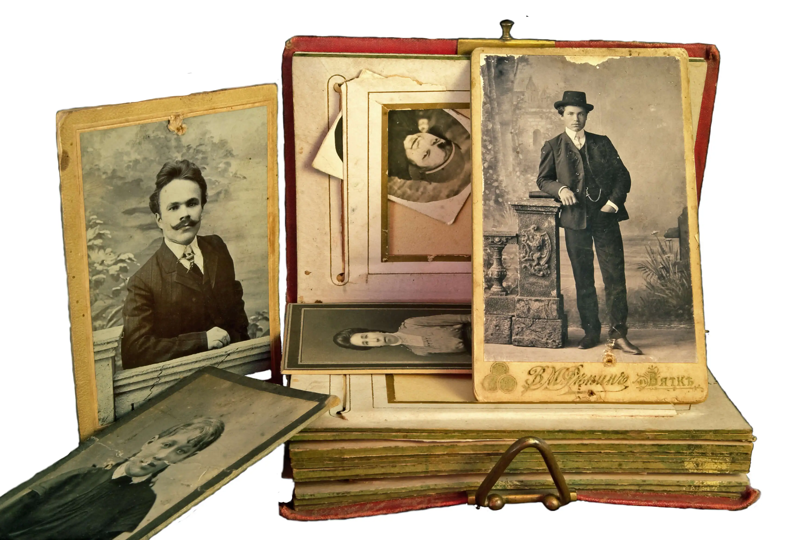

Professional Genealogy & Ancestry Research Services
At Forebear Find, we provide comprehensive genealogy research services specializing in Italian ancestry, African American family history, and European lineages. Our expert research helps you discover your roots, obtain vital records for dual citizenship applications, and preserve your family's story for future generations.
Italian Dual Citizenship Research Services
Our Italian dual citizenship research service is designed specifically for individuals pursuing Italian citizenship by descent (jure sanguinis). We handle the complete genealogical research process including:
- Tracing your Italian lineage to establish unbroken bloodline from Italian ancestor to you
- Retrieving certified birth, marriage, and death certificates from Italian comuni (municipalities)
- Obtaining documents from Italian state archives (Archivi di Stato) and parish churches
- Securing apostilles and official translations for all Italian documents
- Locating U.S. naturalization records to verify citizenship eligibility
- Compiling complete documentation packages for consular or court applications
We work across all 20 Italian regions and have extensive experience navigating Italian bureaucracy, language barriers, and complex record-keeping systems. Whether your ancestors came from Sicily, Lombardy, Campania, or any other Italian region, we can help you obtain the documents you need.
Italian Vital Records Retrieval
Need Italian birth certificates, marriage records, or death certificates for family research or legal purposes? We provide professional vital records retrieval services including:
- Birth certificates (certificati di nascita) from Italian civil records offices
- Marriage certificates (certificati di matrimonio) with proper annotations
- Death certificates (certificati di morte) and death records
- Church baptism, marriage, and burial records from Italian parishes
- Official translations from Italian to English by certified translators
- Apostille services for international legal recognition
Each document is obtained directly from the appropriate Italian government office or archive, ensuring authenticity and legal validity for all purposes including citizenship applications, genealogical research, and legal proceedings.
African American Genealogy Research
African American family history research requires specialized knowledge and techniques due to the unique challenges of tracing ancestors through slavery and reconstruction. Our services include:
- Freedmen's Bureau records research (labor contracts, marriage records, school records)
- Pre-1870 census and slave schedule analysis
- Plantation records and slaveholder documentation
- Post-emancipation vital records and county courthouse research
- African American newspaper archives and church records
- Military service records (Civil War, Buffalo Soldiers, WWI, WWII)
- Migration pattern tracking from the South to northern and western states
We approach African American genealogy with cultural sensitivity and historical expertise, honoring your ancestors' resilience and preserving their stories for future generations.
European Ancestry & Immigration Research
Beyond Italy, we trace European ancestry across multiple countries and help document your family's immigration journey to America:
- Irish and Scottish ancestry research using civil records and church registers
- Eastern European genealogy (Poland, Ukraine, Czech Republic, Hungary)
- German, Austrian, and Swiss family history research
- Ellis Island immigration records and ship passenger manifests
- U.S. naturalization and citizenship papers
- Port of entry records (New York, Boston, Philadelphia, Baltimore, New Orleans)
- Multi-generational family tree construction spanning continents
Custom Family History Narratives
Transform your genealogical research into beautifully written family stories that bring your ancestors to life:
- Professionally written family history books with historical context
- Ancestral biographies highlighting individual lives and achievements
- Immigration journey narratives documenting your family's path to America
- Military service histories honoring veteran ancestors
- Photo restoration and integration with written narratives
- Print-ready PDFs or professionally bound books
Our custom narratives combine meticulous research with compelling storytelling, creating heirloom-quality documents your family will treasure for generations.
Comprehensive Genealogy Research Packages
Not sure where to start? Our comprehensive research packages include:
- Complete family tree construction (4-6 generations)
- Document procurement from multiple repositories
- Historical context research (where ancestors lived, worked, and worshipped)
- DNA analysis interpretation and genetic genealogy consultation
- Breaking through genealogical brick walls and solving family mysteries
- Descendancy research to find living relatives
- Property and land records research
- Probate records, wills, and estate documents
How Our Genealogy Services Work
Our research process is personalized and collaborative. After an initial consultation to understand your goals, we develop a customized research plan. We then conduct thorough archival research, obtain necessary documents, and present our findings in clear, organized formats. Throughout the process, we maintain communication and can adjust our approach based on discoveries and your evolving interests.
Whether you need a single Italian birth certificate or a comprehensive multi-generational family history, we tailor our services to meet your specific needs and budget.
Sample Research Deliverables
Our deliverables include detailed family trees, ancestor profile sheets, timeline documents, certified vital records with translations, research reports explaining our methodology and findings, and beautifully crafted family narratives. Each document is professionally formatted and suitable for sharing with family members, submitting to government agencies, or preserving as cherished family heirlooms.
Why Choose Forebear Find for Your Genealogy Research
- Specialized expertise in Italian vital records systems and dual citizenship requirements
- Direct experience working with Italian government offices and archives
- Professional training in African American genealogy research methods
- Access to extensive genealogical databases and international record repositories
- Personalized research approach tailored to your family's unique history
- Clear communication and transparent project updates
- Flexible pricing options to fit various budgets and research goals
Get Started with Your Genealogy Research Today
Ready to discover your family's story? Contact us today for a free consultation. We'll discuss your genealogy goals, answer your questions, and create a customized research plan to help you uncover your heritage and preserve your family's legacy.
View Service Pricing Schedule Free Consultation